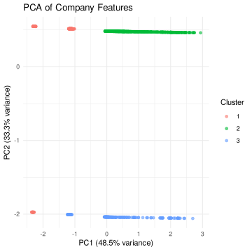

file_path <- "DataDNA Dataset Challenge - Consumer Financial Complaints Dataset - October 2025.xlsx"
dataset <- readxl::read_excel(file_path, sheet = 2)Clustering Analysis
The goal of this document is to perform clustering analysis on the companies based on their characteristics to identify distinct groups of companies with similar profiles.
1 Load data
2 Clustering Analysis
We create a chunk of code that performs k-means clustering on the dataset based on selected features. We will standardize the features before clustering to ensure they are on the same scale.
library(dplyr)
library(cluster)
library(scales)
library(stats)
dataset <- dataset |>
janitor::clean_names()
df <- dataset |>
filter(!is.na(enforcement_history), !is.na(avg_response_time_days)) |>
mutate(
enforcement = ifelse(enforcement_history == "Yes", 1, 0),
size_num = case_when(
company_size_tier == "Small" ~ 1,
company_size_tier == "Medium" ~ 2,
company_size_tier == "Large" ~ 3,
TRUE ~ NA_real_
)
) |>
select(
company_id_1081, enforcement, size_num, reputation_score, market_share_percent,
timely_response_rate, avg_response_time_days, complaints_per_1pct_share
)
features <- df |>
select(enforcement, size_num, reputation_score, market_share_percent,
timely_response_rate, avg_response_time_days, complaints_per_1pct_share) |>
mutate(across(everything(), scale))
silhouette_scores <- data.frame(k = integer(), avg_sil_width = numeric())
for (k in 2:10) {
set.seed(123)
km <- kmeans(features, centers = k, nstart = 25)
ss <- silhouette(km$cluster, dist(features))
silhouette_scores <- rbind(
silhouette_scores,
data.frame(k = k, avg_sil_width = mean(ss[, 3]))
)
}
best_k <- silhouette_scores$k[which.max(silhouette_scores$avg_sil_width)]
set.seed(123)
final_km <- kmeans(features, centers = best_k, nstart = 25)
clustered <- df |>
mutate(cluster = final_km$cluster)
cluster_summary <- clustered |>
group_by(cluster) |>
summarise(
n_companies = n(),
avg_complaint_rate = mean(complaints_per_1pct_share, na.rm = TRUE),
avg_company_size = mean(size_num, na.rm = TRUE),
avg_market_share_perc = mean(market_share_percent, na.rm = TRUE),
enforcement_share = mean(enforcement, na.rm = TRUE),
.groups = "drop"
) |>
mutate(
cluster_label = paste0("Cluster ", cluster)
)
cluster_quality <- silhouette_scores |>
mutate(
is_best = (k == best_k)
)
clustered |> tail()# A tibble: 6 × 9
company_id_1081 enforcement size_num reputation_score market_share_percent
<chr> <dbl> <dbl> <dbl> <dbl>
1 COMP-1076 0 1 68 0.0274
2 COMP-1077 0 1 56 0.0099
3 COMP-1078 0 1 87 0.0472
4 COMP-1079 0 1 52 0.109
5 COMP-1080 0 1 99 0.0485
6 COMP-1081 0 1 89 0.028
# ℹ 4 more variables: timely_response_rate <dbl>, avg_response_time_days <dbl>,
# complaints_per_1pct_share <dbl>, cluster <int>cluster_summary# A tibble: 3 × 7
cluster n_companies avg_complaint_rate avg_company_size avg_market_share_perc
<int> <int> <dbl> <dbl> <dbl>
1 1 279 325. 2.39 0.209
2 2 611 2251. 1 0.0458
3 3 191 1786. 1.24 0.0715
# ℹ 2 more variables: enforcement_share <dbl>, cluster_label <chr>cluster_quality k avg_sil_width is_best
1 2 0.2548143 FALSE
2 3 0.2647291 TRUE
3 4 0.2397746 FALSE
4 5 0.2066999 FALSE
5 6 0.2034004 FALSE
6 7 0.1953937 FALSE
7 8 0.1856649 FALSE
8 9 0.1953324 FALSE
9 10 0.1979762 FALSEThe results indicate that the optimal number of clusters is 3 based on the silhouette scores. The clusters can be interpreted as follows:
- Cluster 1: Large and medium companies with low complaint rates and practically unexistent enforcement history.
- Cluster 2: Small companies with high complaint rates and an zero enforcement history.
- Cluster 3: Medium and small companies having enforcement history with high complaint rates.
3 Plot clusters
Let’s visualize the clusters based on company size and complaint rate.
library(ggplot2)
ggplot(
clustered,
aes(x = as.factor(size_num), y = complaints_per_1pct_share, color = as.factor(cluster))
) +
geom_point(alpha = 0.6) +
labs(
title = "Company Clusters based on Size and Complaint Rate",
x = "Company Size (1=Small, 2=Medium, 3=Large)",
y = "Complaints per 1% Market Share",
color = "Cluster"
) +
theme_minimal()
The plot reveals the same patterns observed in the causal analysis, confirming that the clusters align with company size. Therefore it doesn’t add much new information to the report alone, but we can try plotting principal components.
4 PCA Analysis
Principal Component Analysis (PCA) can help visualize the clusters that could make a good addition to the report.
library(dplyr)
library(stats)
df <- df |> left_join(
clustered |> select(company_id_1081, cluster),
by = "company_id_1081"
)
# Standardize features
features <- df |>
select(enforcement, size_num, complaints_per_1pct_share) |>
mutate(across(everything(), scale))
pca_model <- prcomp(features, center = TRUE, scale. = TRUE)
# Extract first two principal components
pca_data <- as.data.frame(pca_model$x[, 1:2])
colnames(pca_data) <- c("PC1", "PC2")
# Combine with company info
pca_result <- df |>
bind_cols(pca_data) |>
mutate(
cluster = as.factor(cluster)
)
# Variance explained by first two components
explained_var <- summary(pca_model)$importance[2, 1:2] * 100
explained_df <- data.frame(
Component = c("PC1", "PC2"),
VarianceExplained = explained_var
)
pca_result |> tail()# A tibble: 6 × 11
company_id_1081 enforcement size_num reputation_score market_share_percent
<chr> <dbl> <dbl> <dbl> <dbl>
1 COMP-1076 0 1 68 0.0274
2 COMP-1077 0 1 56 0.0099
3 COMP-1078 0 1 87 0.0472
4 COMP-1079 0 1 52 0.109
5 COMP-1080 0 1 99 0.0485
6 COMP-1081 0 1 89 0.028
# ℹ 6 more variables: timely_response_rate <dbl>, avg_response_time_days <dbl>,
# complaints_per_1pct_share <dbl>, cluster <fct>, PC1 <dbl>, PC2 <dbl>explained_df Component VarianceExplained
PC1 PC1 48.546
PC2 PC2 33.330The first two principal components explain a significant portion of the variance in the data, allowing us to visualize the clusters effectively.
5 Plot PCA Results
library(ggplot2)
ggplot(
pca_result,
aes(x = PC1, y = PC2, color = cluster)
) +
geom_point(alpha = 0.6) +
labs(
title = "PCA of Company Features",
x = paste0("PC1 (", round(explained_var[1], 1), "% variance)"),
y = paste0("PC2 (", round(explained_var[2], 1), "% variance)"),
color = "Cluster"
) +
theme_minimal()
The plot shows that the first two principal components effectively separate the clusters identified earlier, confirming the distinct profiles of the companies based on their size. This PCA analysis doesn’t add much new information to the report, so we will also skip it.